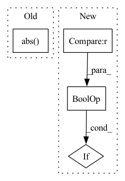

Pattern ID :17363
Before Change
// Check for the action space, it may lead to hard-to-debug issues
if isinstance(action_space, spaces.Box) and (
np.any(np.abs(action_space.low) != np.abs(action_space.high))
or np.any(np.abs( action_space.low) > 1)
or np.any(np.abs(action_space.high) > 1)
):
warnings.warn(After Change
"cf https://stable-baselines3.readthedocs.io/en/master/guide/rl_tips.html"
)
if isinstance(action_space, spaces.Box) and action_space.dtype != np.dtype(np.float32) :
warnings.warn(
f"Your action space has dtype {action_space.dtype}, we recommend using np.float32 to avoid cast errors."
)In pattern: SUPERPATTERN
Frequency: 3
Non-data size: 4
Instances Fragment ID: 57627496
Project Name: dlr-rm/stable-baselines3
Commit Name: e24147390d2ce3b39cafc954e079d693a1971330
Time: 2021-12-09
Author: antonin.raffin@ensta.org
File Name: stable_baselines3/common/env_checker.py
M Class Name: AnonimousClass
N Class Name: AnonimousClass
M Method Name: check_env(3)
N Method Name: check_env(3)
M Parent Class:
N Parent Class:
M File Name: stable_baselines3/common/env_checker.py
N File Name: stable_baselines3/common/env_checker.py
M Start Line: 254
M End Line: 270
N Start Line: 254
N End Line: 283
Before Change
// deform regularization
deform = outputs["deform"]
loss = loss + 1e-3 * deform.abs() .mean()
return pred_rgb, gt_rgb, loss
After Change
loss = loss.mean()
// deform regularization
if "deform" in outputs and outputs["deform"] is not None :
loss = loss + 1e-3 * outputs["deform"].abs().mean()
return pred_rgb, gt_rgb, loss Fragment ID: 57627495
Project Name: ashawkey/torch-ngp
Commit Name: 5a7222a5c7629dc3153e01be1f0834489245ee45
Time: 2022-07-18
Author: ashawkey1999@gmail.com
File Name: dnerf/utils.py
M Class Name: Trainer
N Class Name: Trainer
M Method Name: train_step(2)
N Method Name: train_step(2)
M Parent Class: _Trainer
N Parent Class: _Trainer
M File Name: dnerf/utils.py
N File Name: dnerf/utils.py
M Start Line: 81
M End Line: 119
N Start Line: 81
N End Line: 121
Before Change
loss = MultivariateNormalDistributionLoss()
target = loss.distribution_class(loc=mean, cov_diag=std**2, cov_factor=cov_factor).sample((n,))
if transformation in ["log", "log1p", "relu", "softplus"]:
target = target.abs()
target = target[:, 0]
normalizer = TorchNormalizer(center=center, transformation=transformation)
normalized_target = normalizer.fit_transform(target).view(1, -1)
target_scale = normalizer.get_parameters().unsqueeze(0)After Change
cov_factor = torch.tensor([[0.0], [0.0]])
n = 100000
if transformation is not None and "log" in transformation :
mean = mean.log()
std = std / 1e4
Fragment ID: 57627492
Project Name: jdb78/pytorch-forecasting
Commit Name: 09eb7856fd61cd62c765376a0b1b2400fecb4243
Time: 2022-05-14
Author: beitner.jan@bcg.com
File Name: tests/test_metrics.py
M Class Name: AnonimousClass
N Class Name: AnonimousClass
M Method Name: test_MultivariateNormalDistributionLoss(2)
N Method Name: test_MultivariateNormalDistributionLoss(2)
M Parent Class:
N Parent Class:
M File Name: tests/test_metrics.py
N File Name: tests/test_metrics.py
M Start Line: 197
M End Line: 214
N Start Line: 192
N End Line: 205